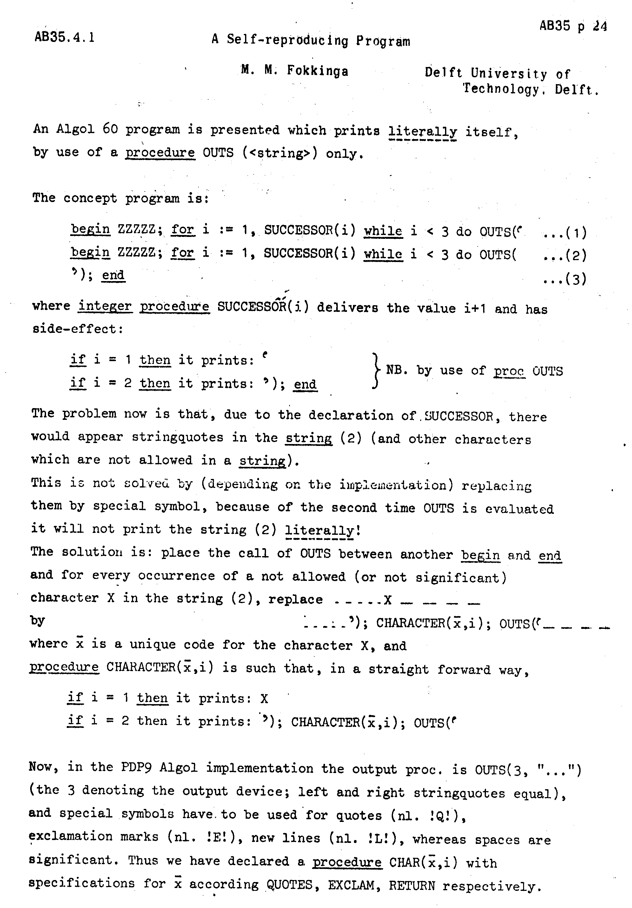
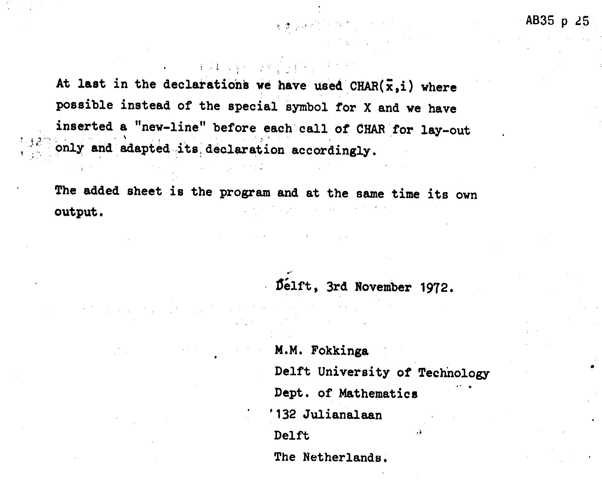
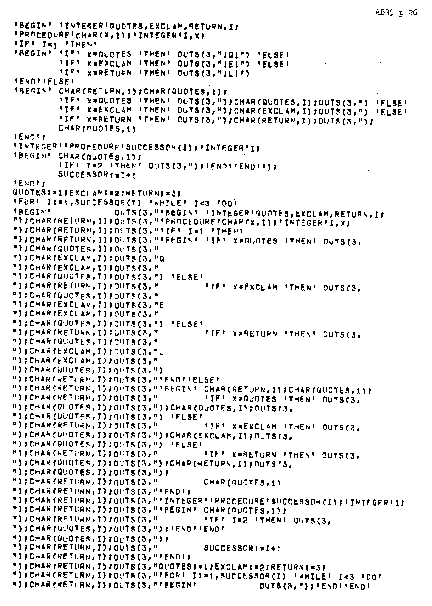

AB35.4.1
The following statement appeared in the issues at the request of the Council of IFIP:
The opinions and statements expressed by the contributors to this Bulletin do not necessarily reflect those of IFIP, and IFIP undertakes no responsibility for any action which might arise from such statements. Except in the case of IFIP documents, which are clearly so designated, IFIP does not retain copyright authority on material published here. Permission to reproduce any contribution should be sought directly from the authors concerned. No reproduction may be made in part or in full of documents or working papers of the Working Group itself without permission in writing from IFIP.
AB35.4.1 M.M Fokkinga: A Self-reproducing Program, pages 24-26
Page 24

Page 25

Page 26
